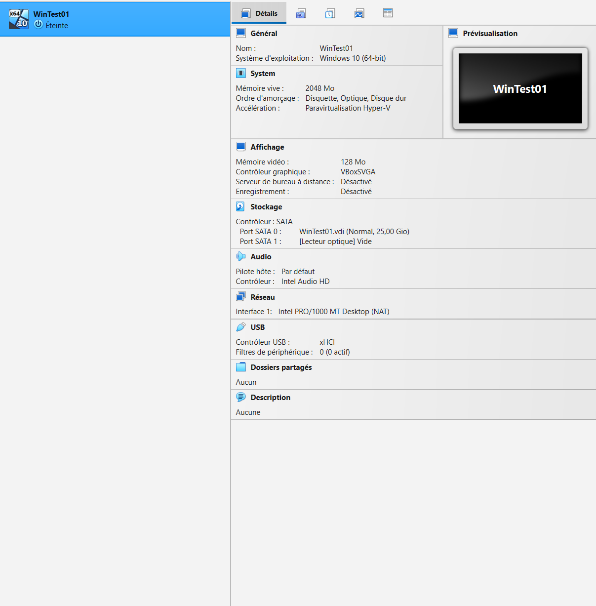
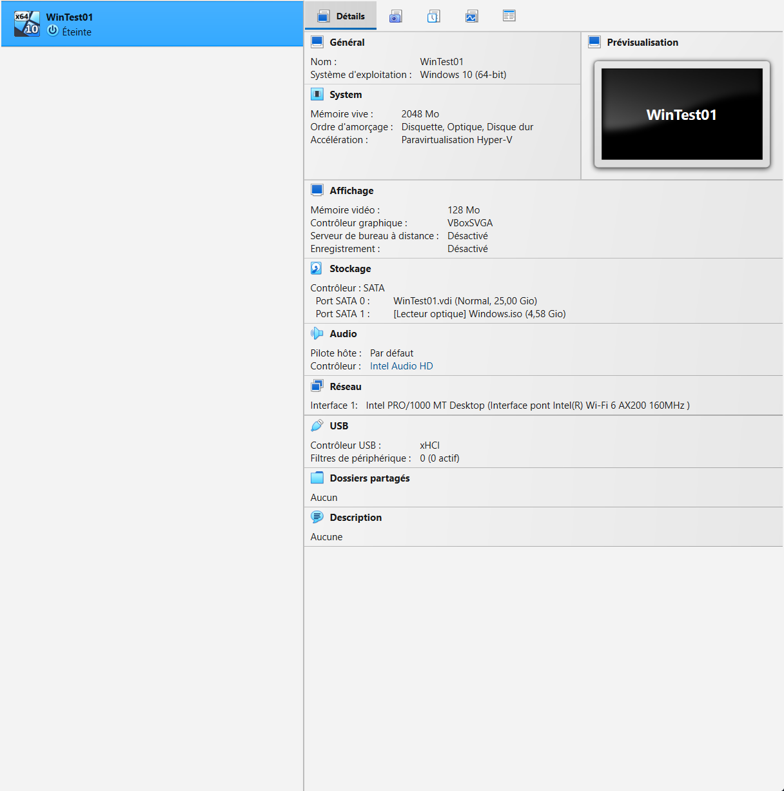
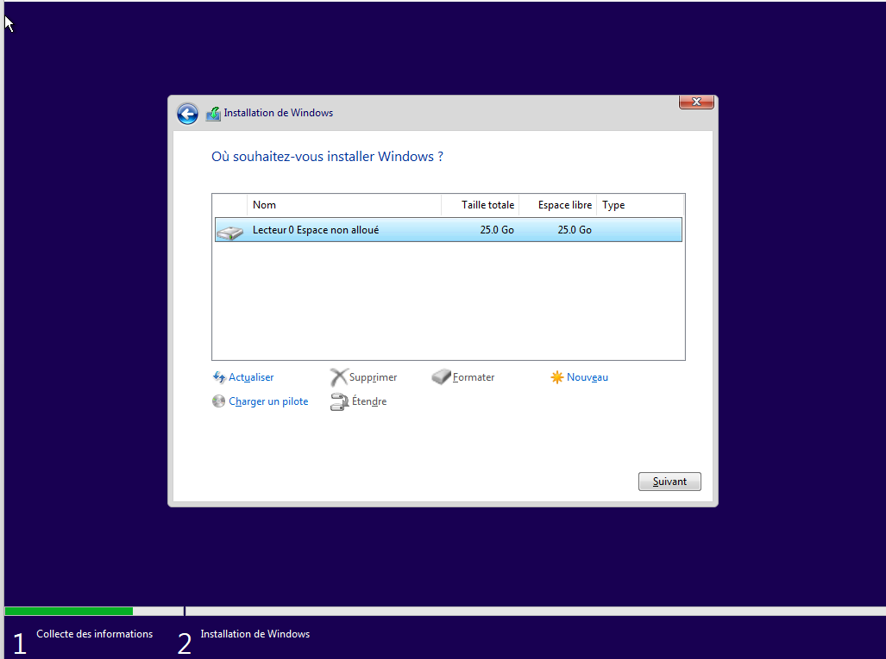
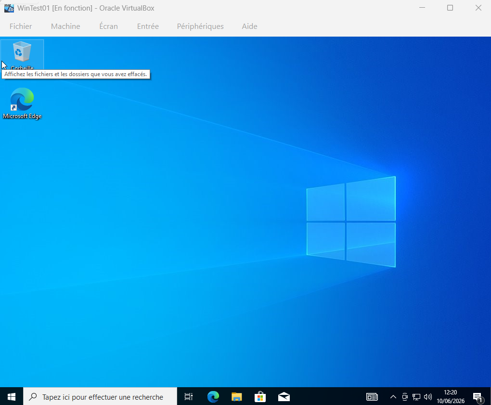
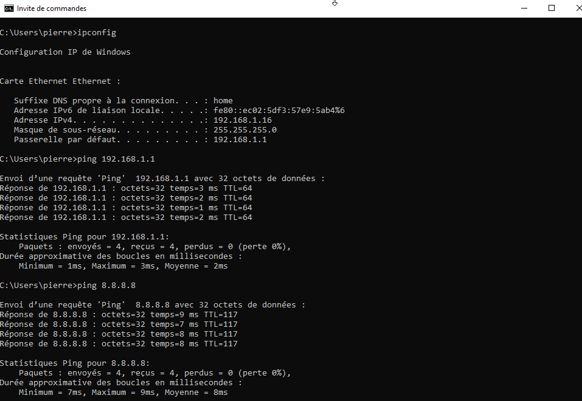

Procédure complète d'installation et de configuration d'un poste Windows dans VirtualBox — de la création de la VM à la validation réseau, avec un incident réel rencontré et résolu.
La virtualisation permet de créer des environnements de test sans risque pour la machine hôte. C'est un outil fondamental en BTS SIO pour tester des configurations réseau, des déploiements et des procédures de maintenance.
| Élément | Requis | Note |
|---|---|---|
| Logiciel | VirtualBox 7.x | Téléchargement gratuit sur virtualbox.org |
| ISO Windows 10 | Fichier .iso officiel | Gratuit sur microsoft.com (outil de création de support) |
| RAM disponible | 4 Go minimum | 2 Go alloués à la VM, 2 Go conservés pour l'hôte |
| Espace disque | 30 Go libres | Disque virtuel dynamique de 25 Go maximum |
| Processeur | VT-x / AMD-V | Virtualisation à activer dans le BIOS — voir l'incident rencontré ci-dessous |
Dans VirtualBox, cliquer sur Nouvelle et renseigner les paramètres :

Avant de démarrer, attacher l'ISO au lecteur optique virtuel :
Vérifier que l'ISO est bien attaché avant de démarrer — sinon la VM démarre sur un disque vide et affiche une erreur de boot. Sur la vue Détails, le Port SATA 1 doit afficher le nom du fichier .iso et non « Vide ».

Choisir le mode réseau selon le besoin :
Choix pour ce projet : Accès par pont sur la carte Wi-Fi de l'hôte (Intel Wi-Fi 6 AX200), pour que la VM reçoive une vraie IP du DHCP de la box et soit visible sur le réseau local. Vérification à l'étape 06.
Démarrer la VM — l'assistant d'installation se lance :

Au premier démarrage, Windows lance l'assistant de configuration :

Ouvrir cmd dans la VM et dérouler les tests de connectivité :
ipconfig → la VM a bien reçu une IP du DHCPping 192.168.1.1 → la passerelle répondping 8.8.8.8 → l'accès internet fonctionneping [IP de l'hôte] → VM et hôte communiquentSi la VM et l'hôte se pingent mutuellement, le mode pont fonctionne : la VM est intégrée au réseau local comme un vrai poste. Ce test fait le lien avec le projet 01.

Au lancement de la machine virtuelle, VirtualBox a refusé de démarrer avec l'erreur suivante :
Résolution en appliquant la même méthode de diagnostic que sur le terrain :
L'erreur VERR_SVM_DISABLED indique explicitement que AMD-V est désactivé dans le BIOS ou bloqué par l'OS hôte.
AMD-V (appelé SVM chez AMD) est la virtualisation matérielle du processeur. Désactivée par défaut sur de nombreuses cartes mères.
Redémarrage → BIOS/UEFI → option SVM Mode (section CPU) passée sur Enabled → sauvegarde et redémarrage.
Erreur, cause et solution consignées dans cette page — la VM démarre normalement après correction.
Ce que cet incident illustre : un message d'erreur bien lu contient souvent sa propre solution. La méthode observer → diagnostiquer → corriger → documenter, issue de la maintenance industrielle, s'applique directement au support informatique.